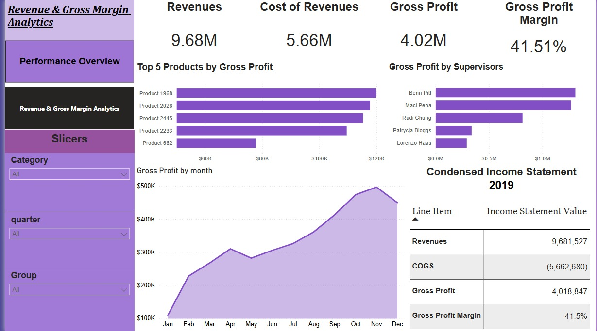

Dashboards
Power BI Dashboards

Dashboard 01
Financial Performance & Profitability
Provides a financial overview of the business through key profitability indicators and performance trends.

Dashboard 02
Sales Performance & Revenue Analysis
Presents revenue trends, category performance, salesperson performance, and supplier analysis.